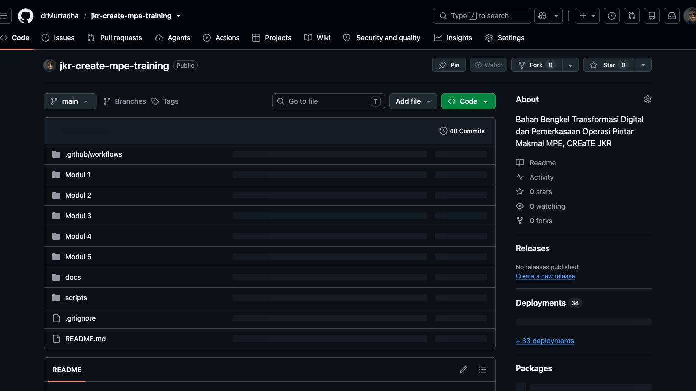
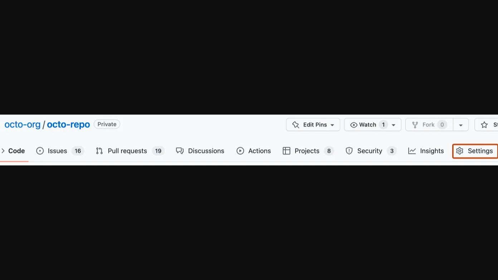
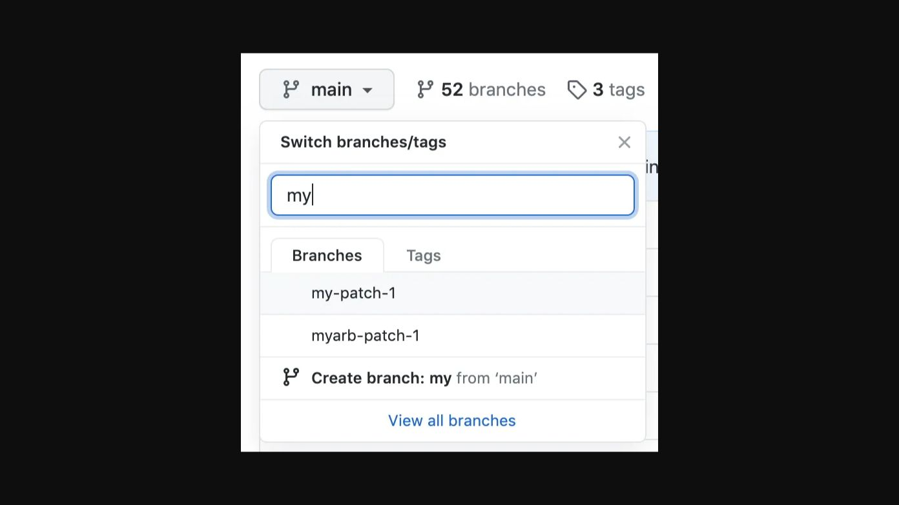
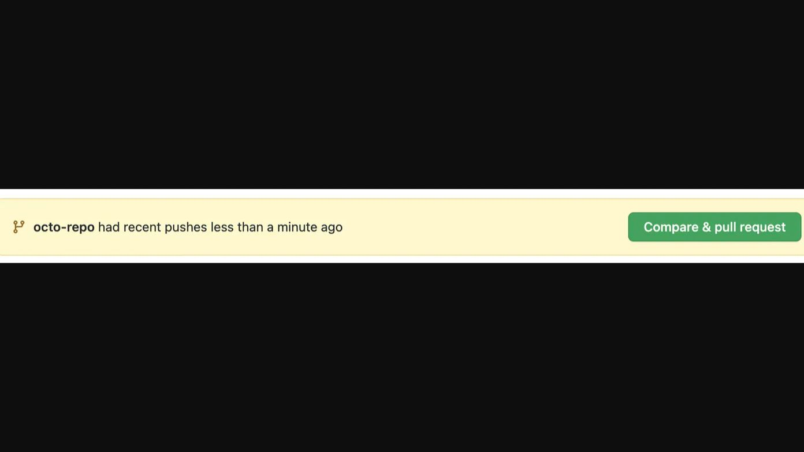
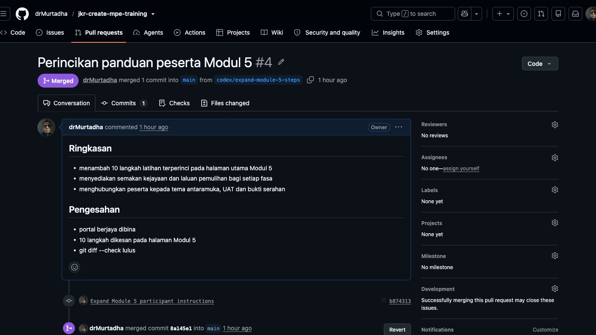

Tujuan aktiviti
Aktiviti 30 minit ini menyediakan peserta untuk bekerja sebagai satu pasukan projek dalam Modul 5. Bagi sembilan peserta, bentuk tiga kumpulan yang terdiri daripada tiga orang. Setiap kumpulan menggunakan satu repositori latihan dan semua ahli mesti melakukan sekurang-kurangnya satu tindakan di GitHub.
GitHub menyimpan sejarah perubahan projek. Ia bukan storan bagi kata laluan, token, URL deployment, ID Google atau data operasi sebenar.
Hasil akhir
Setiap kumpulan perlu mempunyai:
- Satu repositori latihan;
- Seorang ketua projek dan dua ahli yang telah menerima jemputan;
- Sekurang-kurangnya satu branch selain
main; - Satu commit daripada ahli;
- Satu pull request yang disemak;
- Satu perubahan yang telah dimerge ke
main.
Sebelum bengkel
Setiap peserta perlu:
- Mencipta akaun GitHub;
- Mengesahkan alamat e-mel;
- Mengaktifkan pengesahan dua faktor atau passkey jika dibenarkan;
- Mencatat username GitHub sendiri;
- Memastikan boleh log masuk tanpa berkongsi kata laluan atau kod pemulihan.
Rujukan rasmi: Mencipta akaun GitHub dan Bermula dengan akaun GitHub.
Kenali istilah asas
| Istilah | Maksud mudah | Contoh dalam latihan |
|---|---|---|
| Repository | Folder projek dan sejarahnya | mpe-hub-kumpulan-1 |
| Branch | Ruang kerja berasingan | ali-kemas-kini-readme |
| Commit | Rekod satu set perubahan | Tambah peranan kumpulan |
| Push | Menghantar commit ke GitHub | Branch muncul dalam repositori |
| Pull request (PR) | Permintaan menyemak perubahan | Ahli meminta ketua menyemak |
| Review | Semakan sebelum perubahan diterima | Komen atau kelulusan |
| Merge | Memasukkan perubahan ke main |
PR ditutup sebagai Merged |
| GitHub Actions | Kerja automatik selepas perubahan | Membina portal |
| GitHub Pages | Laman web daripada repositori | URL hasil kumpulan |
Aliran kerja yang perlu diingati:
branch → edit → commit → pull request → review → merge → semak hasil
Pembahagian peranan
| Peranan | Tanggungjawab semasa latihan |
|---|---|
| Ketua projek | Cipta repositori, jemput ahli, semak PR dan merge |
| Penyumbang | Cipta branch, ubah fail, commit dan buka PR |
| Penyemak/penguji | Semak Files changed, uji hasil dan beri maklum balas |
Tukar peranan dalam Modul 5 supaya setiap peserta mengalami lebih daripada satu tugas.
Jadual hands-on 30 minit
| Minit | Aktiviti | Bukti |
|---|---|---|
| 0–5 | Semak akaun, e-mel dan username | Semua peserta boleh log masuk |
| 5–10 | Bentuk tiga kumpulan dan tetapkan peranan | Senarai peranan kumpulan |
| 10–15 | Ketua mencipta repositori dan menjemput ahli | Dua jemputan dihantar |
| 15–20 | Ahli menerima jemputan dan mencipta branch | Branch baharu kelihatan |
| 20–25 | Ahli mengedit README, commit dan membuka PR | Satu PR terbuka |
| 25–30 | Penyemak memeriksa dan ketua merge | Status PR Merged |
Bahagian A — Langkah ketua projek
A1. Cipta repositori kumpulan
- Di penjuru kanan atas GitHub, pilih ikon +.
- Pilih New repository.
- Gunakan nama
mpe-hub-kumpulan-X; gantikanXdengan nombor kumpulan. - Masukkan penerangan ringkas dan pilih keterlihatan yang diarahkan fasilitator.
- Tandakan Add a README file.
- Pilih Create repository.

Semak sebelum teruskan: nama repositori betul, fail README.md wujud dan tiada data sebenar.
A2. Jemput dua ahli
- Minta username GitHub kedua-dua ahli.
- Dalam repositori, buka Settings.
- Pada menu Access, pilih Collaborators atau Collaborators and teams.
- Pilih Add people.
- Cari username, pilih akaun yang betul dan hantar jemputan.
- Ulang untuk ahli kedua.

Semak sebelum teruskan: dua jemputan ditunjukkan sebagai Pending atau telah diterima.
Rujukan rasmi: Menjemput kolaborator ke repositori peribadi.
Bahagian B — Langkah ahli projek
B1. Terima jemputan
- Buka e-mel atau notifikasi GitHub.
- Pilih jemputan repositori kumpulan.
- Pilih Accept invitation.
- Kembali ke halaman utama repositori.
Semak sebelum teruskan: ahli boleh membuka repositori dan melihat tab Code.
B2. Cipta branch sendiri
- Pada tab Code, pilih menu branch yang memaparkan
main. - Taip nama branch mengikut format
nama-tugas, contohnyasiti-kemas-kini-readme. - Pilih Create branch.
- Pastikan nama branch baharu kini dipaparkan pada menu.

Jangan membuat latihan terus pada main.
B3. Edit README dan commit
- Buka
README.md. - Pilih ikon pensel Edit this file.
- Tambah nama kumpulan, peranan dan satu objektif projek rekaan.
- Pilih Commit changes.
- Gunakan mesej ringkas, contohnya
Tambah peranan kumpulan. - Pastikan commit dibuat pada branch sendiri.
Semak sebelum teruskan: halaman branch menunjukkan commit baharu dan fail berubah seperti yang dijangka.
B4. Buka pull request
- Pilih Compare & pull request atau buka tab Pull requests → New pull request.
- Pastikan
base: maindancompare: branch-anda. - Masukkan tajuk yang menerangkan perubahan.
- Dalam huraian, nyatakan apa yang berubah dan cara menyemaknya.
- Pilih Create pull request.

Semak sebelum teruskan: PR berstatus Open dan hanya fail yang dimaksudkan dipaparkan.
Bahagian C — Langkah penyemak dan ketua
C1. Semak perubahan
- Buka PR dan pilih Files changed.
- Pastikan perubahan hanya melibatkan
README.md. - Semak bahawa tiada kata laluan, token, e-mel peribadi atau data operasi.
- Tinggalkan komen jika pembetulan diperlukan.
- Jika betul, pilih Review changes → Approve jika pilihan tersedia.
C2. Merge ke main
- Ketua projek kembali ke tab Conversation.
- Pastikan paparan menyatakan branch boleh dimerge dan tiada konflik.
- Pilih Merge pull request.
- Pilih Confirm merge.
- Semak status berubah kepada
Merged.

Semak akhir: buka tab Code, pilih main dan pastikan kandungan README baharu kelihatan.
Jika menu tidak kelihatan atau sesuatu gagal
| Gejala | Punca biasa | Tindakan |
|---|---|---|
| Tiada tab Settings | Bukan pemilik repositori | Minta ketua projek melaksanakan langkah tersebut |
| Jemputan tidak diterima | Username salah atau e-mel belum disemak | Semak username dan notifikasi GitHub |
| Tidak boleh mencipta repositori | E-mel belum disahkan | Lengkapkan pengesahan e-mel |
| Tidak boleh push atau commit | Jemputan belum diterima | Terima jemputan dan muat semula halaman |
Perubahan berada pada main |
Branch tidak ditukar sebelum edit | Hentikan dan minta fasilitator menyemak sebelum meneruskan |
| PR menunjukkan konflik | Fail sama diubah oleh dua orang | Jangan paksa merge; minta fasilitator membantu menyelesaikan konflik |
| Workflow merah | Binaan atau ujian gagal | Buka Actions, baca langkah merah dan betulkan pada branch |
Checklist kumpulan
- Ketiga-tiga peserta boleh log masuk.
- Ketua projek dan dua ahli telah dikenal pasti.
- Dua ahli telah menerima jemputan.
- Satu branch peserta diwujudkan.
- Satu commit mempunyai mesej yang jelas.
- Satu PR telah disemak.
- PR berjaya dimerge ke
main. - Tiada rahsia atau data sebenar dimasukkan.
Sambungan ke Modul 5
Gunakan repositori dan peranan kumpulan yang sama dalam Modul 5. Ketua projek mengurus tetapan dan merge; ahli membuat perubahan melalui branch; penyemak menguji antaramuka, rekod dan GitHub Pages sebelum penerbitan.